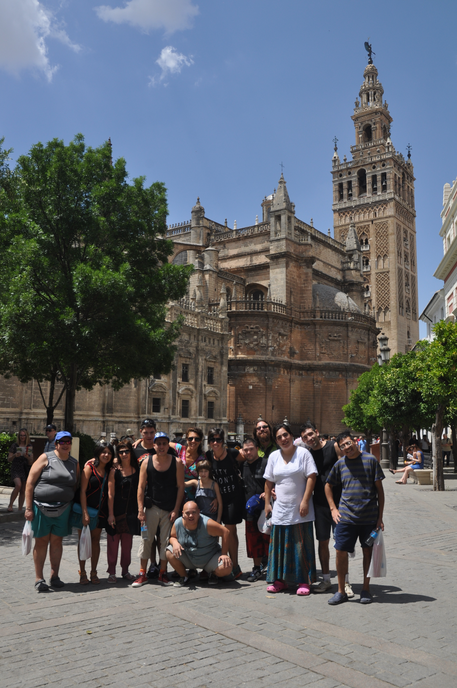
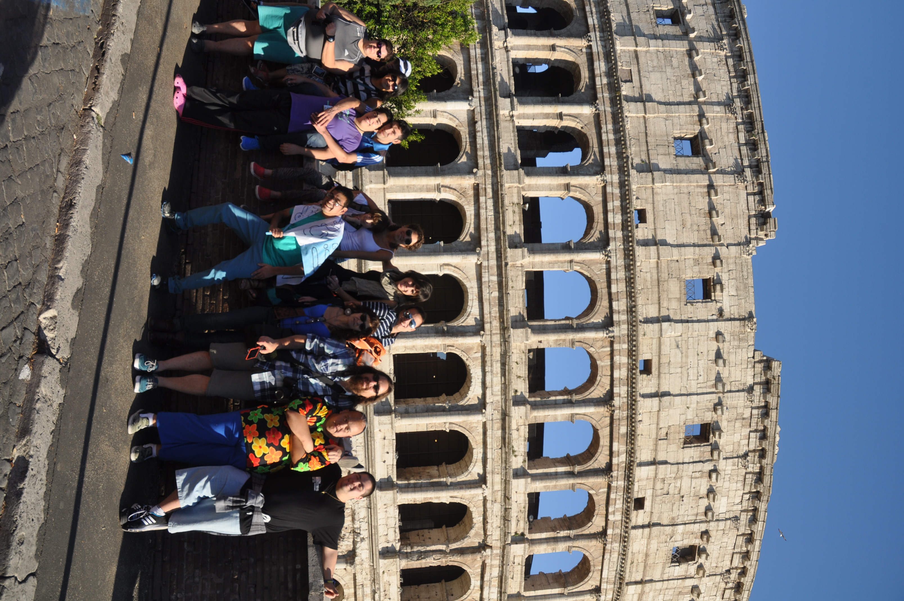
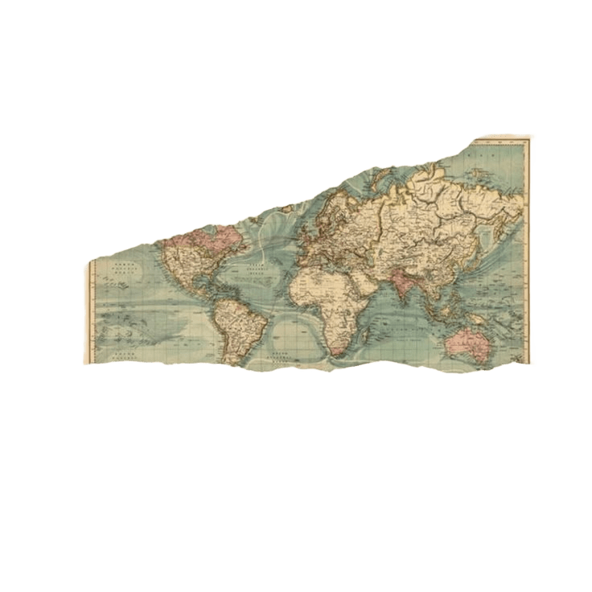
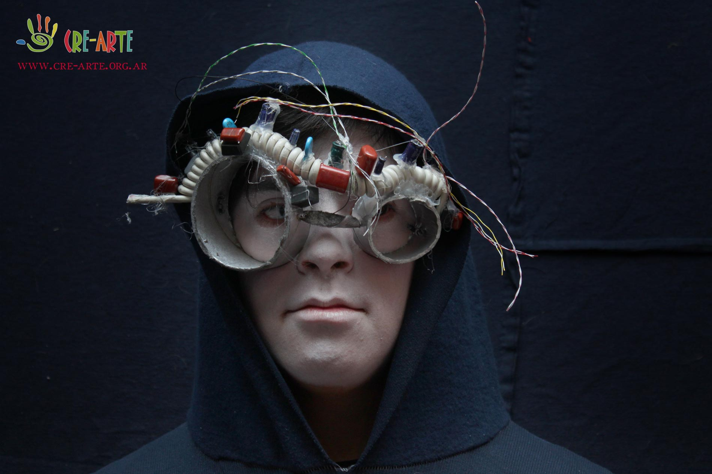
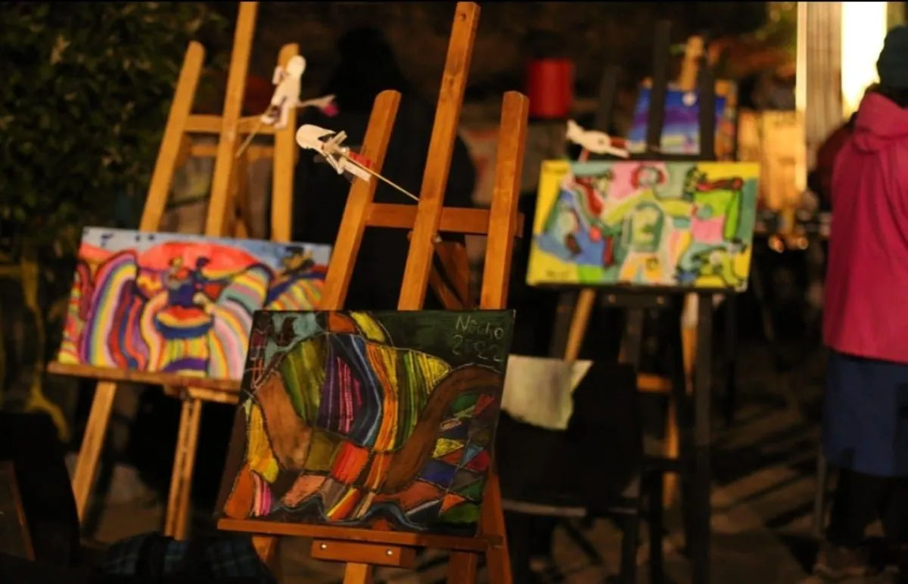

Participación estelar en festivales europeos, rompiendo los esquemas del arte dogmático y conectando pasiones transoceánicas.
Nuestras giras por toda la región fomentan un encuentro humano donde las diferencias construyen y no dividen.
Uniendo el sur del mundo a través de caravanas artísticas que empoderan realidades originarias.
Cre Arte se posiciona como estandarte de la inclusión, preparando permanentemente sus valijas hacia nuevos destinos artísticos.

Construimos vínculos duraderos con instituciones culturales, universidades y centros de arte de toda América Latina y Europa. Cada alianza es un nuevo canal para intercambiar ideas, técnicas y visiones del mundo.

Programa conjunto de intercambio docente y co-producción de exhibiciones en Buenos Aires y Bariloche.
Colaboración para exhibir arte patagónico en España, vinculando la identidad local con el público internacional.

Integración en una red regional que permite itinerar obras por museos de toda la Patagonia argentina y chilena.
El festival nace como un espacio para vivir el arte como herramienta de transformación, inclusión y reconocimiento de las personas con discapacidad. Buscamos no solo acercar propuestas artísticas al público, sino también fomentar la creatividad y la expresión. En ediciones como la de 2017, reunió a más de 100 artistas de todo el mundo, generando encuentros, talleres y experiencias compartidas que fortalecieron una comunidad que perdura hasta hoy.
Una semana de intervenciones en espacios públicos, performances, murales colectivos y encuentros con artistas invitados.
Veladas culturales mensuales donde alumnos, docentes e invitados presentan sus obras en un ambiente íntimo y vibrante.
Un evento bienal que convoca artistas de Argentina, Chile, Uruguay y Brasil para un gran encuentro cultural en la Patagonia.